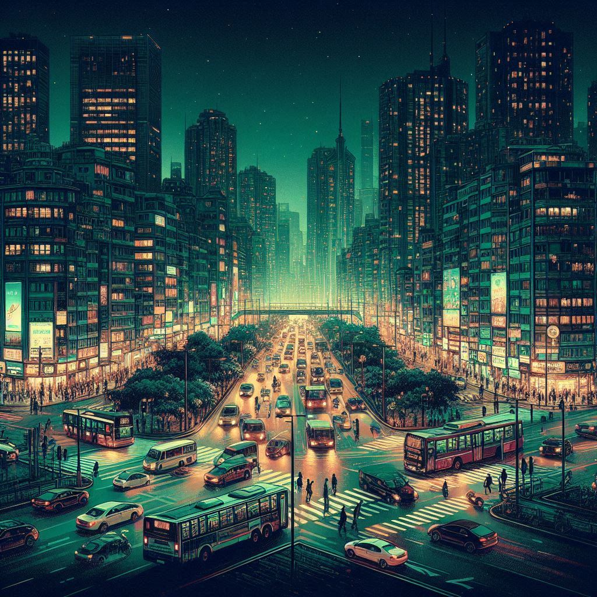
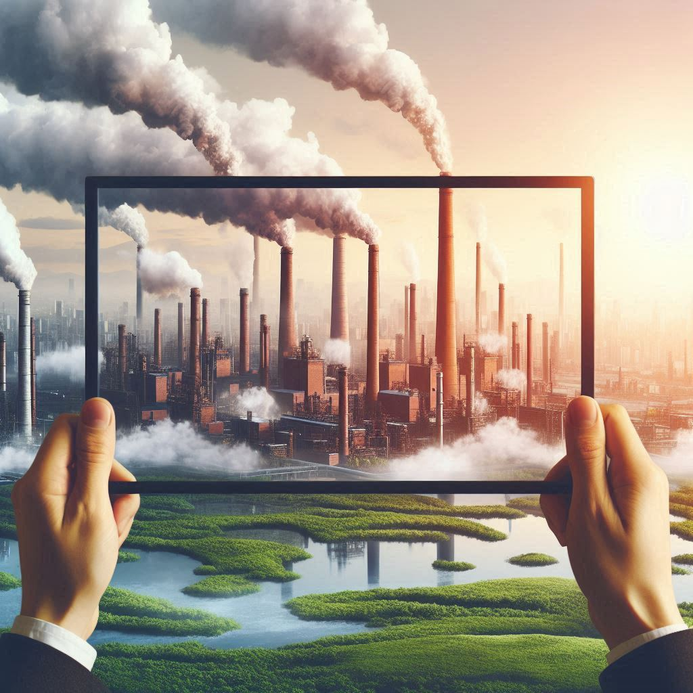

O CLUBE DE ROMA |
|
A partir da crise do petróleo, na década de 1970, a preocupação com o meio ambiente começou a tomar força, época em que as atenções estavam dirigidas para a exploração excessiva dos recursos naturais. Foi nesse período que surgiu pela primeira vez o conceito de Desenvolvimento Sustentável, com o nome de Ecodesenvolvimento, para ser uma resposta à polarização do Clube de Roma, que foi protagonizada por dois grupos partidários com visões divergentes sobre a relação entre desenvolvimento econômico e meio ambiente. Diante de tal divergência, o relatório do Clube de Roma acabou por exacerbar a controvérsia quando apontou o crescimento zero como forma de evitar a catástrofe ambiental. Nesse contexto, o conceito de Ecodesenvolvimento surge como uma abordagem conciliadora, propondo que o progresso técnico relativizaria o limite ambiental mas, não o eliminaria, e que o crescimento econômico é condição necessária, mas não suficiente para, por si só, erradicar a pobreza e diminuir as desigualdades sociais (ROMEIRO, 1999). O passar do tempo vem favorecendo certa convergência entre as duas posições. O aumento da pressão do sistema econômico sobre o meio ambiente mostrou os efeitos contraditórios do progresso técnico e científico. De um lado a ameaça e o impacto ao meio ambiente tornaram-se mais claros e evidentes. Por outro lado, as previsões catastróficas do Clube de Roma se mostraram infundadas com o aumento da eficiência na prospecção e no uso dos recursos naturais, resultando na redução dos seus preços. |

URBANIZAÇÃO |
|
A modernização agrícola ocorrida no Brasil nas décadas de 1960 e 1970 aumentou o uso de maquinários na agricultura. Tal processo causou a migração de milhões de pessoas do campo para as cidades de tamanho médio – entre 100 mil e 500 mil habitantes, nas décadas de 1960 a 1980. A consequência foi o aceleramento do processo de urbanização (FERREIRA, 2002). Segundo a ONU, na América Latina, mais de 70% da população já vive nas cidades, o que havia sido previsto para acontecer apenas em 2030. Vivemos principalmente em cidades, que são espaços constituídos de seres humanos sociais que coexistem, desenvolvendo complexos relacionamentos econômicos. Para tanto, se faz necessário que atividades relacionadas à engenharia sejam desenvolvidas (ZMITROWICZ, 2002). |

DESENVOLVIMENTO |
Na década de 1980 o conceito de desenvolvimento sustentável foi expandido,
abrangendo também
a poluição pela geração de resíduos. |